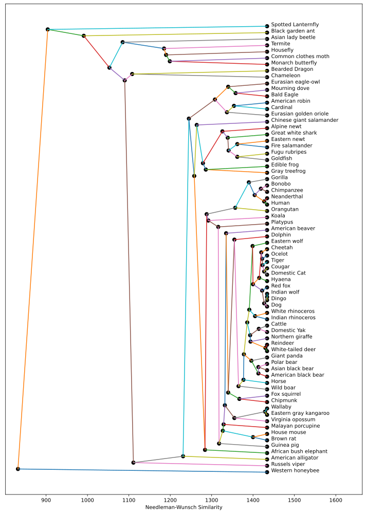
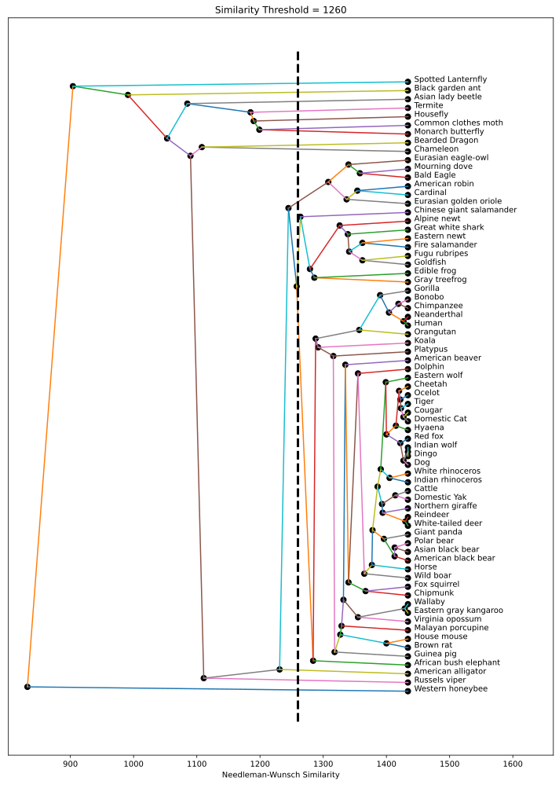
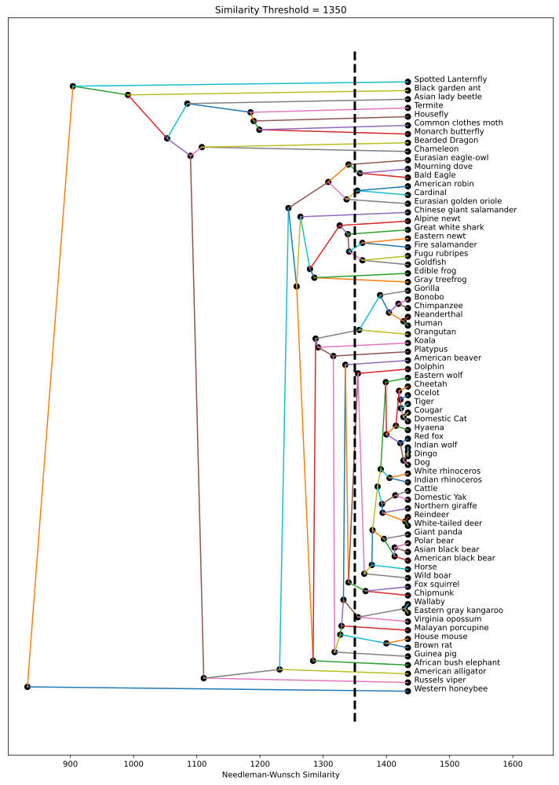

Assignment 5: Phylogenetic Trees (45 Points)
Chris Tralie
Due Wednesday 4/28/2021
Overview / Logistics
This assignment forms the culmination of the unit 5 on trees. In it, you will explore a full pipeline for creating evolutionary trees of species. Amazingly, starting from raw amino acid sequence data from carefully chosen genes and comparing it across species with a dynamic programming algorithm, we are able to create a phylogenetic tree from the ground up, which shows common ancestors in an evolutionary history. What makes this particularly fascinating is that it's all done purely from experimental data and some clever algorithms, and it mirrors theories that have been made about evolutionary history.
Learning Objectives
- Work with dictionaries in Python.
- Implement Needleman-Wunsch scoring for gene sequence comparison using dynamic programming.
- Use Kruskal's algorithm with union find to efficiently implement single-linkage clustering to build phylogenetic trees.
- Use recursion to perform hierarchical clustering.
-
Cache the result of expensive computations on disk using the
jsonlibrary in python.
What To Submit
Submit your file phylogenetic.py file to canvas, along with an image of your tree for the alternative drawing section. Finally, please write a brief description of the code you wrote to address every component of this assignment, and indicate the name of your buddy if you had one.
Background: DNA Sequence Matching
In this section, we will discuss DNA sequences and algorithms for computing their similarity.
Amino Acids
A DNA sequence can be thought of as a string. Roughly, DNA encodes building blocks known as amino acids, which, when decoded and strung together in sequence, form proteins. The sequence has a large impact on the way the protein structure folds and ultimately forms a 3D shape, leading towards a particular biomolecular role.
Click here to see more information about each type of amino acid. In this assignment, we will be considering an alphabet of 23 amino acids, including all of the standard 20, as well as the B,Z,X special ones highlighted in red in the aforementioned link.
The Needleman-Wunsch Algorithm
Since DNA is a string, we can compare two DNA sequences with string comparison methods, but when comparing the sequences across organisms, the technique needs to account for mutations that have occurred over evolutionary histories, including additions, deletions, and substitutions of individual amino acids. We've discussed dynamic programing techniques for computing the string edit distance, which accounts for such mutations. However, it models a unit cost for an addition, deletion, and substitution alike, and there are biological reasons that we may want to have costs that are more less expensive for certain amino acid edits, as explained below.
To address the need for variable costs, there is a variant of edit distance known as Needleman-Wunsch, in which the costs can change depending on what characters are involved. By convention, we actually switch from a "minimizing cost" mindset to a maximizing score mindset. Given a string of length M and a string of length N, the optimal Needleman-Wunsch score can be computed in O(MN) time using a similar dynamic programming algorithm to edit distance and dynamic time warping. In particular, to match a string of length M to a string of length N, the vanilla version proceeds by filling in an (M+1) x (N+1) table S* storing all solutions to sub-problems, using the following recurrence relation, where di and dj refer to the cost of deleting the ith and jth characters of the first and second strings, respectively, and cij refers to the cost of substituting the ith character of the first string for the jth character of the second string (and everything is 0-indexed):
\[ S_{ij} = \left\{ \begin{array}{cc} S_{i-1, 0} + d_{i-1} & j = 0 \\ S_{0, j-1} + d_{j-1} & i = 0 \\ \max \left\{ \begin{array}{c} S_{i-1, j-1} + c_{i-1, j-1} \\ S_{i, j-1} + d_{j-1} \\ S_{i-1, j} + d_{i-1} \end{array} \right\} & i > 0, j > 0 \end{array} \right\} \]
(*) Note that there is a version that uses only Θ(N) memory, which uses a similar trick to a recent algorithm I developed with an Ursinus student for dynamic time warping
To help you explore examples of Needleman-Wunsch scoring, I have provided a live demo app below. In the default example, we have an alphabet of two letters a and b, and the scores are as follows
- A -1 penalty for deleting a
- A -2 penalty for deleting b
- A -3 penalty for swapping an a for a b or a b for an a
- A +2 score for matching an a to an a
- A +3 score for matching a b to a b
{"ab":-3} means that it costs 3 both to swap a in for b and to swap b in for a, and {"a":-1} refers to a penalty of -1 for deleting a.
To generate examples, when you hit "match strings" in the live demo below, this program will run the Needleman-Wunsch algorithm to fill out the dynamic programming table. It will also perform a backtracing to find one of the optimal-cost sequence of edit operations, though this is not something you have to do in this assignment. Play around with different examples and explore the results until you feel comfortable.
Needleman-Wunsch Interactive Applet
String 1 | |
String 2 | |
Alphabet | |
Pairwise | |
Optimal Matching Score | |
BLOSUM Amino Acid Substitution Costs
Now that we have an alphabet for DNA strings and an algorithm to compare them, we can define meaningful costs for matchings and substitutions of amino acids. We will be using tables obtained from an experimental, data-driven technique that constructs a "Blocks Substitution Matrix," or "BLOSUM" for short, as described in this paper. In a nutshell, the technique computes statistical likelihoods that substitutions take place by examining many well-aligned sequences.
There are different similarity thresholds at which BLOSUM tables can be constructed, and higher numbers mean that we're more conservative in which symbols we allow to be aligned. In this assignment, we'll be considering BLOSUM50 and BLOSUM62, as obtained from ftp://ftp.ncbi.nih.gov/repository/blocks/unix/blosum/blosum.tar.Z. Click the "show/hide" buttons to view each of these below. You'll notice that we get a positive score when matching an amino acid to itself, and a negative score when swapping amino acids and when deleting them (matching to a *), so this is compatible with Needleman-Wunsch. You'll also notice that this matrix is symmetric (e.g. A to D and D to A are both -2), so we will only be storing the non-redundant parts in a lookup dictionary.
BLOSUM 62 | BLOSUM 50 |
||||||||||||||||||||||||||||||||||||||||||||||||||||||||||||||||||||||||||||||||||||||||||||||||||||||||||||||||||||||||||||||||||||||||||||||||||||||||||||||||||||||||||||||||||||||||||||||||||||||||||||||||||||||||||||||||||||||||||||||||||||||||||||||||||||||||||||||||||||||||||||||||||||||||||||||||||||||||||||||||||||||||||||||||||||||||||||||||||||||||||||||||||||||||||||||||||||||||||||||||||||||||||||||||||||||||||||||||||||||||||||||||||||||||||||||||||||||||||||||||||||||||||||||||||||||||||||||||||||||||||||||||||||||||||||||||||||||||||||||||||||||||||||||||||||||||||||||||||||||||||||||||||||||||||||||||||||||||||||||||||||||||||||||||||||||||||||||||||||||||||||||||||||||||||||||||||||||||||||||||||||||||||||||||||||||||||||||||||||||||||||||||||||||||||||||||||||||||||||||||||||||||||||||||||||||||||||||||||||||||||||||||||||||||||||||||||||||||||||||||||||||||||||||||||||||||||||||||||||||||||||||||||||||||||||||||||||||||||||||||||||||||||||||||||||||||||||||||||||||
|
|
NOTE: Interestingly, as shown in this paper, the original authors had a normalization error when computing the BLOSUM matrices according to their procedure, but the matrices somehow yield better search results. So we will be using the original matrices in this assignment.
Phylogenetic Trees
Now that we have ways of measuring similarity between amino acid sequences, we can use these similarity measures as a proxy for overall similarity between species. Amazingly, if we choose the right genes to analyze, we can use Needleman-Wunsch similarity to build a "tree of life" from the bottom up, somewhat like we did with Huffman trees. But in this context, the tree will show branching in evolutionary history, and it is known as a Phylogenetic tree. To build it, we'll merge nodes together first that have the highest similarity score, and they will end up towards the bottom of the tree. Internal nodes can then be thought of as common ancestors, and eventually we will end up at a root which can be thought of as the origin of life.
When inferring the evolution of species, good genes to examine come from mitochondrial DNA (DNA describing the energy factory in cells), as the DNA mutates quickly and is only passed on from the mother. Using https://www.ncbi.nlm.nih.gov/nuccore/, I've provided amino acid sequences data for 71 species in the file organisms.json from the COX-3 mitochondrial gene. The figure below shows the phylogenetic tree of these species obtained using Needleman-Wunsch with BLOSUM62 costs. We will walk through how to construct this in the next section.

Single-Linkage Clustering
We will now describe an algorithm, known as "single linkage clustering with the min rule," that can be used to construct phylogenetic trees. In this context, a phylogenetic tree is a specific example of a more general construct known as a dendrogram.
Algorithm 1: O(N3) Naive Single-Linkage Clustering
We will first describe an algorithm that will help to explain conceptually how the tree is built, but this algorithm is inefficient, so we will then explain a better algorithm that computes the same information, and you will implement the latter algorithm.
- Start off with each species in its own cluster, which is represented by a leaf node in the tree.
-
Merge the two clusters with the highest similarity, according to the Needleman-Wunsch distance. Similarity is defined as the maximum similarity between all pairs of items in one and the other cluster. Create a new internal node in the tree whose children are the root nodes of each cluster that's being merged.
As an example, suppose that Fugu rubipres and Goldfish are paired together, and Eastern newt and Fire salamander are paired together. Then the BLOSUM62-based Needleman-Wunsch scores are as follows:
In this case, the maximum similarity between members of the two clusters occurs between the Eastern Newt and Goldfish at 1341. So if at this step 1341 is the largest similarity between all pairs of clusters that exist, then we merge these four and form an internal node representing that.Eastern newt Fire salamander Fugu rubipres 1319 1294 Goldfish 1341 1300 - Repeat step 2 as long as there is more than one cluster.
- The final node that's created is the root of the tree.
Algorithm 2: Kruskal's Algorithm for O(N2logN) Single Linkage Clustering
The algorithm we've described so far totally works, but the problem is that a straightforward implementation from this description takes O(N3) time for N items. That's OK for only 71 species in our example, but these sorts of trees are often built on images, where every pixel starts off in its own node. Even a 100x100 image has 10,000 pixels, so N3 is a trillion at that point. So even though we can get away with a naive algorithm in this assignment, for the purposes of the class, we will be implementing a more efficient version based on an algorithm known as Kruskal's algorithm, using union find to help us. The algorithm uses union find to keep track of clusters as clusters are merged together from most to least similar until everything is in one tree. The algorithm maintains three data structures in tandem as it goes along
- The tree that's being built
- A union find data structure to keep track of which leaf nodes (corresponding to species) are part of the same connected component
- An array or dictionary that keeps track of the node of the tree corresponding to a root in the union find data structure
- Create a node for each species, and create a union find structure where each node starts off as its own component. Set the roots of each of these components to be the leaf nodes in the tree in a separate array.
- Compute all pairwise similarities between nodes based on Needleman-Wunsch (really, you should precompute them and load them from disk so you don't have to wait forever to test minor variations).
- Sort all pairs of nodes in decreasing order of similarity to ensure that the most similar pairs get grouped together first. This step incurs the dominant cost of O(N2 log N) since there are O(N2) pairs.
- Now we need to merge the nodes together from the bottom up according to our sort. In particular, for each pair of nodes in the above order, check to see if they are part of different clusters by comparing their roots in union find. If they have different roots, merge them together in the union find data structure, create a new internal node for them, and set the new root to point to this internal node. Otherwise, if they are already part of the same cluster, they have the same root (adding an edge would form a cycle), and you can simply skip this pair.
- The last node to be added after repeating step 4 for all pairs is the root of the tree.
This algorithm is tricky enough to warrant an example showing the dynamics of the three data structures. For simplicity of illustration, we'll show building a dendrogram corresponding to a minimal spanning tree on a set of points in the plane, though the algorithm is very similar for phylogenetic trees on Needleman Wunsch; we basically just switch sorting in ascending order of length to sorting in descending order of similarity. The example is shown below. The left plot shows the tree being built on the original point cloud, as well as the parents pointers of the union find. The right plot shows the dendrogram being constructed as new internal nodes are being added, and it also shows the array that keeps track of which union find roots correspond to which dendrogram roots.
NOTE: For those interested, there is an O(N2) algorithm that does this. It's basically the same, except there's an extra O(N2) step at the beginning that builds the tree first, not necessarily from the bottom up, known as Prim's algorithm. In this way, we narrow down the O(N) pairs that are merged, so the sorting only takes O(N log N) steps. We will discuss Prim's algorithm towards the end of the last unit.
NOTE ALSO: The maximum rule algorithm is not necessarily the best algorithm for constructing phylogenetic trees, because it tends to produce subtrees whose most similar nodes are quite similar, but whose least similar nodes can be quite different. A better scheme is the "average rule," in which nodes are merged together based on average similarity of pairs between them. But this is beyond the scope of this assignment.
Programming Tasks
Click here to download the starter code for this assignment. This comes along with species DNA data in organisms.json, as well as the two BLOSUM tables blosum50.bla and blosum62.bla (Click here to view the raw DNA data from organisms.json in your browser's JSON viewer if you're curious).
You will be editing the python file phylogenetic.py. Slightly less code has been provided for you than on previous assignments to give you the freedom to develop things your own way, but I have provided boilerplate code to load the BLOSUM matrices and to plot the trees, as well as a complete implementation of union find with path compression in unionfind.py, which you will use to help build the trees efficiently.
NOTE: This assignment was inspired heavily by this blog post, and you are welcome to refer to this as you're writing code for Needleman-Wunsch, but the starter code you're using has some different conventions, and you will be writing your own code for Phylogenetic trees and clustering, going well beyond what's discussed in that blog post.
Needleman-Wunsch (10 Points)
The first task in this assignment is to implement the Needleman-Wunsch algorithm to compute similarity scores between DNA sequences, as described in the background (please be sure to read this carefully first). You can load in a BLOSUM table as a dictionary in the same format as in the live demo. For instance,
Then, you can load in the species in a dictionary format as
The keys of this dictionary store the species name and the values store the amino acid string for COX3, with characters corresponding to labels in the BLOSUM table.
I would recommend that you first implement a Needleman-Wunsch method that takes two strings to compare and a cost dictionary as parameters, and which returns the maximum score, as computed by Needleman-Wunsch. Then, before you worry about testing it with BLOSUM on real DNA sequences, test it on simple examples first, like the ones in the demo. Finally, move onto passing along the BLOSUM costs and real organisms. As an example, using BLOSUM62, you should get a similarity of 1375 between a Dog and a Hyaena and a similarity of 1427 between a Domestic Cat and a Cougar.
All-Pairs Needleman-Wunsch
Once you're convinced this is working properly, you should compute Needleman-Wunsch on all pairs of species to get ready for the next step. This is by far the bottleneck in the whole process, and it will take a few minutes in pure python (you can make it faster by using numba, but I don't have the time to go over this). To make it so you can tweak things in the next part without having to wait a few minutes to recompute all of this, you should save the results of your computation to disk. The easiest way to do this is by using the json library in python, which allows you to save dictionaries as plaintext to disk. For example, the code
will write the table to a file, and the code
will read this information back from the file.
HINT: As a final hint, there are a few options for how to store all pairs of the distances. You can store them in dictionaries with strings or tuples of strings as keys describing the pair of species and values describing the distances. Or you can come up with a unique numbered index to represent each species and store the distances in a 2D array.
Building Phylogenetic Trees (20 Points)
Now that you have similarities between all pairs of species, you should load them from disk and use them to build a tree from the ground up using the efficient single-linkage clustering algorithm. As in assignment 1, and as hinted at in the example, you will need to refer to your species as zero-indexed numbers to use union find. Also, root has been turned into a first class public method so you can quickly find roots. As explained in the background, you should also keep a list or dictionary of TreeNode references so you can quickly convert from union find root numbers to nodes in the dendrogram that are at the root of particular clusters.
Finally, as a programmatic note, the TreeNode class is setup so that if you pass a number to the constructor, it assumes that this is an internal node that's been merged at a similarity with this value. If you instead pass a string, it assumes it's a leaf node of that particular species. So when you create the leaf nodes for each species at the beginning, pass a string with the species name, and when you create the internal nodes in step 2, pass the similarity between the pair that gave rise to it. Then, once you have the last node, simply create a PhyloTree object and make this node the root. Assuming this is all working and that you've called your tree T, you can draw it with.
Alternative Drawings (5 Points)
Unlike binary search trees and Huffman trees, the left/right ordering is completely irrelevant in phylogenetic trees. All of the renderings so far have shown some arbitrary assignment of left and right to each child, but there is a whole equivalence class of such assignments that represent the same exact phylogenetic information.
One thing that we might like to see in a tree rendering is edge lengths that are minimized. Swap some of the left/right assignments in one of the trees you've drawn so that some of the branches are shorter. Clearly demarcate the code you used to do this, and please submit a drawing showing that you've accomplished this.
Clustering (10 Points)
Now that you've built the tree, it's possible to choose different thresholds and to cluster different species together that are similar, based on a chosen threshold. This is easiest to explain in a picture. What we want to do is to choose a particular similarity threshold and to cut the tree into branches at that threshold. For instance, consider a threshold of 1260, as measured by BLOSUM62:

If we do this, we get the following clusters, with sizes indicated on the left:
As you can see both by the picture and from the clusters, all of the mammals (including marsupials) cluster together, all of the birds cluster together, and the amphibians cluster together with the fish.
By contrast, if we choose a more restrictive threshold of 1350, then we get the following clusters:

More of the animals end up by themselves in a cluster, but we did manage to separate out most of the marsupials (kangaroo, opossum, wallaby) and all of the primeates (bonobo, chimpanzee, gorilla, human, neanderthal, orangutan) from the mammals cluster.
Code to write
Your job in this section will be to implement this clustering using recursive methods in the tree class. The entry point to your clustering should be a method in the tree class that accepts a single parameter of the threshold you're choosing, and you should return the clusters as a list of lists, as shown in the example above.
As a hint, you should pass along a list by reference that holds the clusters. Each cluster is itself a list, which you may want to generate with a separate recursive helper method that enumerates all of the nodes in a particular subtree.